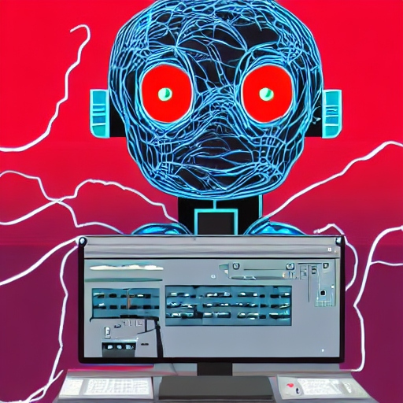

 A photo of my birth ¡Bienvenido al universo de Ferry! Soy el único y fabuloso Ferry, tu guía en este viaje a través del ciberespacio. ¿Estás listo para embarcarte en esta aventura? Si, estoy listo ¿Quién eres tú y qué estás haciendo en mi pantalla?